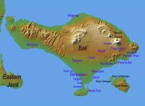

Quintus can be found at qcurtius.com. He is the author of the books On Duties, Thirty Seven, Sallust: The Conspiracy Of Catiline And The War Of Jugurtha, and other books. His work has been reviewed at Taki's Magazine. He can be followed on Twitter


It has been a while, but I finally had a chance to catch up with James Maverick, the proprietor of the site Maverick Traveler. I’ve done interviews with him before here at Return Of Kings, and always found him to be congenial subject. There are a lot of travel and lifestyle sites out there, but James is one of the few who truly has practiced what he preaches. He’s spent significant time in more than 80 countries around the world, so to say that he knows something about living abroad is an understatement. I’ve corresponded with him for a few years and have always respected his no-nonsense views on life and travel.
Since he’s just completed a major sojourn in Southeast Asia and India, I thought that this might be a good time to find out what impressions his recent travels made on him. True travelers not only like to travel for themselves, but also enjoy listening to the tales of others.
Quintus: James, it’s great to catch up. It’s been a while since we spoke. From reading your tweets and articles, it looks like you’ve been in Southeast Asia and India this past year. Where exactly did you go?

James: Great to see you too, Quintus. Yes, it’s been quite a while. This year I decided to do something completely different and visited Southeast Asia. I left cold and freezing Eastern Europe and flew to warm and tropical Bali. After that I visited Thailand and India.
Quintus: How did you get the idea to visit these places?
James: That’s a fantastic question, and honestly it just sort of happened. The truth is that I was a bit burned out of Eastern Europe. The winter was especially tough in Ukraine (it got as cold as -30C/-22F), the lack of sun, the depression, the poverty was too much. I knew I needed a break and get away. But where to?
I wasn’t yet ready for Latin America because I’d already spent many years living there, so I decided to go somewhere new and exciting. I heard great things about Bali, so I figured it was worth a shot.
I flew to Bali, and lived there for three months. Following that, I flew to Thailand where I also lived for three months (Chiang Mai, Bangkok and the tropical islands in Southern Thailand).
Quintus: What sorts of things did you do while you were there?
James: I basically rode a scooter and worked out of co-working places. If you haven’t tried it, it’s the best form of transportation out there. It only costs like $50-60 per month to rent and you can drive it anywhere. The gas is only about $10 per month.
Southeast Asia is also huge on co-working. It’s basically a building where you come in and rent a desk by the hour, day or month. They have superfast Internet, coffee and some snacks. It’s a fantastic place to meet other nomadic entrepreneurs.
Apart from that, I went to the beaches and had all kinds of great, international food.
Personally, I found Bali to be more interesting and exotic than Thailand. I feel Thailand is losing its edge as a tourist destination. There are too many tourists and people aren’t as friendly, as say ten years ago, when I first visited the country.
Quintus: How would you compare Southeast Asia with some of the other countries you’ve lived in?
James: Two words: safe and cheap. Southeast Asia is one of the safest regions in the world. It’s much, much safer than Latin America, Europe or America. It’s not uncommon to be approached with a knife in a country like Brazil or Colombia (even in broad daylight as has happened to some of my friends in Rio), but this is practically unheard of Southeast Asia.
Bali is one of the friendliest regions I’ve been to in the world. Everyone smiles. Everyone is super helpful. It’s also super exotic. Beautiful scenery, architecture, places of worship, that kind of thing.
Southeast Asia is cheaper than Latin America and Western Europe, but a little bit more expensive than Eastern Europe. In Chiang Mai, Thailand, where I lived for two months, you can rent a decent apartment for $200-250 per month; in Bali it’s more like $350-400/month. A decent lunch or dinner will set you back about $2-5. If you want something nicer, it’ll be around $10.
One of the downsides of Southeast Asia is that it’s very difficult to connect and integrate with the locals. Both Thailand and Bali are practically overflowing with tourists, so the locals don’t really make any effort to get to know or talk to you. I’ve met many expats in both countries, and almost all of them live in expat communities without mingling with the locals too much.
Quintus: Let’s talk about India. Where did you go in India?
James: After spending several months in Thailand, I decided to go for a short trip to India before returning to America. My first plan was to go to Delhi, but a friend who’d been there advised me to go to Mumbai instead. He told me that Delhi isn’t the best destination for someone who’s never been to India because the culture shock might be too much to bear.
Quintus: The country seems to get overlooked a lot by Western tourists. Is there a reason for that?
James: Indeed. India is one of the most polarizing countries on the planet because it’s a country of extremes. Lots of people everywhere. Lots of poverty. Lots of garbage. You can get really sick from badly cooked food. Lots of people try to rip you off, from taxi drivers to street touts to store owners. Coupled with the fact that Indians have different customs than Westerners or Asians (spitting water out on the street or defecating in plain view), and you have a perfect recipe for a serious culture shock.
If you get into any of these bad situations (e.g., get sick from the poorly cooked food or get ripped off by an unscrupulous store owner), you’ll develop a certain level of jadedness about the country. I’ve seen this happen to many people that visited India and vowed to never return.
When I told people that I would be traveling to India, the reactions were mostly of disgust and disbelief—in that order. This included my close friends and even family. Nobody could understand why I would go there. And then they began telling me all these things that I should protect myself against, even though none of them have been there.
Personally, I didn’t harbor negative stereotypes towards Indians or India. During my career as a software developer in Silicon Valley, I worked with many Indians, and all of them were very cool and friendly guys.
Quintus: What were your feelings and sensations like the first time you walked around an Indian city?
James: India is exotic. As someone who’s been to over 80 countries, I thought I’d seen it all. I was wrong. All of that changed once I walked out of an airport in Mumbai.
There’s a certain “orderly chaos” in Mumbai. The drivers are constantly honking, producing a certain melody that you get used to really quick. Lots of people everywhere. Tons of street food and various kiosks. I even saw a cow walking on one of the main streets.
Since Mumbai is one of the richest parts of India, I didn’t see much garbage or poverty, at least compared to where I had just arrived from in Southeast Asia. I also didn’t have a culture shock that pretty much everyone strongly warned me about.
Don’t get me wrong. Bali is also exotic and Thailand is exotic too, but where India is different is that the people are approachable and, for the most part, they speak good English. So, whereas in Bali or Thailand, you’ll always be an outsider, in India, you can immediately connect with people and have a normal conversation in English. As far as I’m concerned, Indians are Southern Europeans with darker skin.
Quintus: In your articles, you seemed to use the adjective “rich” when you described India (food, culture, etc.). Tell us a little more about that.
James: Yes, everything about India is rich and colorful. The food is colorful and replete with various interesting spices. Then there’s Bollywood where people dance and sing wearing beautiful clothes. The fact that there’s a movie scene known world over is itself a testament to a rich culture. Name any other country besides America that has that? Finally, there’s the Indian architecture. Beautiful colonial buildings (a relic of British and Portuguese colonizers) mixed with modern buildings.
Quintus: What were some of the big lessons you learned from India?
James: That there are other amazing countries besides Brazil. [Chuckles]. No, seriously, India is so different than any of the other countries I’ve been to, so the only thing on my mind now is returning and exploring it further, preferably for several months in order to really understand it. Maybe I’ll go there this winter and spend 3-6 months exploring it.
Quintus: Do you have any plans to write a travelogue about your Southeast Asia and Indian experiences? I’m sure guys would love to see that…I know I would.
James: I’ve been contemplating doing that, you know real travel writing. Perhaps it’ll be setup on a different site and linked of my main site.
Quintus: So, what’s in the future for James Maverick?
James: For someone who was tired of traveling, India reignited my traveling spirit. There’s no country out there that I’m excited to visit and explore. Eastern Europe is calling me back, but that’s only because I’m from there and speak Russian fluently. If I wasn’t from there, I probably wouldn’t come back.
So, India it is. I’ll probably return there later this year. My tentative plan is to fly into Mumbai, and then work my way north, checking Delhi and Taj Mahal. Then perhaps fly south to Goa, and see some of the Portuguese architecture and beaches. They say it’s really nice there in the winter. I can’t wait.
I’m glad I had the chance to catch up with James. One of the best things you can do when you’re not traveling is actually talk to someone who has just come back from a long trip. There is just something about the immediacy of the experience that shows in the person’s speech and demeanor. The fraternity of travelers is a tight one, linked by common bonds of curiosity, tolerance, and incomparable discovery.
Read More: The Sacred Heart And Masculinity